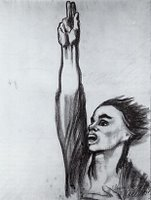
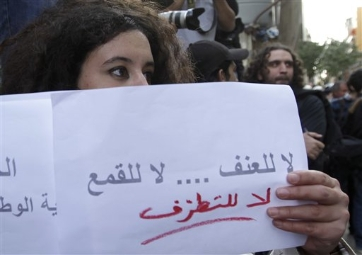
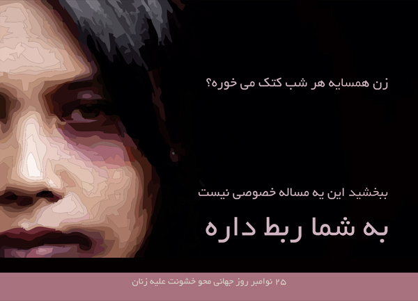
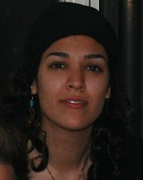

تغییر برای برابری
تغییر برای برابریبی تردید، خواست تغییر قوانین تبعیض آمیز و برابری حقوقی مطالبه مشترک اکثریت قریب به اتفاق زنان در جامعه امروز ایران است. اما اگرچه زنان از لحاظ جنسیت خود و ستمی که از تبعیضات جنسی متحمل می شوند با هم نزدیکی دارند، اما تفاوت جایگاه اجتماعی شان آنان را وا می دارد که از جایگاه اجتماعی خاص خود به این تبعیضات بنگرند، آن را ریشه یابی کنند و راه های مقابله با آن را جستجو و با آن مبارزه کنند...
پذيرش > واژه كليدها > صفحه بندی > ستون وسط
ستون وسط
مقالهها
-

بازهم درباره کمپین یک میلیون امضاء
4 سپتامبر 2010 -
 خشونت ورزی با مجوز عشق
خشونت ورزی با مجوز عشق
7 دسامبر 2011از این دست خشونت های غیر فیزیکی می توان به خشونت هایی اشاره کرد که در روابط دوستی میان دخترها و پسرها رخ می دهد. این موضوع با توجه به جمعیت جوان کشور ایران و تغییر الگوهای رفتاری که موجب بیشتر شدن دامنه ی تجربه ی دوستی دختر و پسر در سنین 16 تا 25 است، بسیار مهم است و باید بیشتر به آن پرداخته شود.اگر تنها خشونت های فیزیکی را مصداق خشونت علیه زنان بدانیم، حجم بسیار گسترده ای از خشونت ها از این دایره بیرون می ماند و افراد خشونت ورز نیز با این ایده خود را مبری از خشونت می یابند...
-
 به فریده ماشینی، خطاب به خودمان /آسیه امینی
به فریده ماشینی، خطاب به خودمان /آسیه امینی
29 مه 2012عصبانیم. یادم است چند بار با گوشه و کنایه با او حرف زده ام. " زنان حکومتی، زنان خودی، جنبش زنانی های نزدیک به قدرت و ... " حالا دلم میخواهد چیز دیگری هم بگویم. مثلا اینکه که همین جنبش زنانی های از قدرت بیرون شده، یکی از رکنهای اساسی همگرایی فعالان حقوق زنان در ایران بوده اند. همان ائتلافهایی که مایه فخر ما به جنبش های سیاسی بوده است. همان همبستگی هایی که از آن به عنوان نشانه های حرکت به سمت سکولاریزم یادکرده ایم.
-
 عکسی که خشونت سرکوب های مصر را یک جا در خود دارد
عکسی که خشونت سرکوب های مصر را یک جا در خود دارد
30 دسامبر 2011, بوسيلهى pariاما چیز وحشیانه ی ویژه ای در عکس بالا وجود دارد. تابوی خشونت علیه زنی غیر مسلح به شکل غیر معمولی در میان جوامع عرب قوی است.اما تماشای این که سه سرباز زن بی دفاعی را با باتوم هایشان، با مشت هایشان و سربازی که به شکل غیر معمولی بی رحم است با پوتین بزنند، تکان دهنده ترین بخش نیست.
-

ساعت آزادی در دمشق دیکتاتور
21 مه 2011دختران پلاکاردی طبقه هفتم، برای اولین تظاهرات زنان در مرکز دمشق آماده می شوند. دو تن از آنان، دو خواهر در شهر درعا بزرگ شده اند. آنها بیش از یک هفته است که هیچگونه خبری از خانواده شان ندارند. تلفنهای همراه و اینترنت قطع است. خبرنگاران حق ورود به کشور را ندارند. حوادثی که بوسیله تلفن های همراه فیلمبرداری شده و به بیرون فرستاده شده اند تنها وسیله ارتباطی با دنیای پیرامون هستند. پناهندگانی که موفق به ورود به اردن شده اند خبر داده اند که جریان آب و برق قطع است و مواد غذائی نیز رو به اتمام است...
-
نسرین ستوده را دریابیم/ پشتیبانی از فراخوان تحصن درمقابل سازمان ملل – ژنو
19 دسامبر 2010بیایید به دعوت و فراخوان بهنگام و مسئولانه وکیل متعهد، شیرین عبادی و شش تن دیگر از فعالان با تجربه ی جنبش زنان پاسخ مثبت دهیم و از هر طریق ممکن به آزادی فوری نسرین ستوده و دیگر زندانیان اعتصابی و نجات آنها از خطر مرگ، کمک رسانیم. روشن است که آزادی نسرین، زمینه ساز و یاری بخش آزادی محمد نوری زادها، غلامحسین عرشی ها، رضا شهابی ها، آرش صادقی ها، بهاره هدایت ها، احمد زیدآبادی ها، بهمن امویی ها، عبداله مؤمنی ها، مجید توکلی ها، عالیه اقدام دوست ها، ...و تمامی در بندان جنبش سبز دمکراسی خواهی ایران خواهد بود...
-
 جنگ هیچ صورت زنانه ای ندارد / ترجمه و تلخیص: شیرین اردلان
جنگ هیچ صورت زنانه ای ندارد / ترجمه و تلخیص: شیرین اردلان
15 دسامبر 2012ازبین تمام توصیفاتی که شنیده بودم چیزی که نمی توانستم با آن کنار بیایم کشتار در جنگ بود. در روزنامه ها کتاب های درسی خیلی معمولی در باره کشتارهای جنگی حرف می زدند. و این که کشتن یک انسان چه عاقبتی دارد هرگز زیر سوال نمی رفت.
زمانی که خبرنگاری جوان بودم مصاحبه با زنان را شروع کردم. آنها نه تنها درد ورنج انسانی را شرح می دادند حتی از پرندگان وحیواناتی که دسته دسته کشته می شدند و به زمین می افتادند، سخن می گفتند و همین طور از طبیعتی که ویران می شد.مردها بیشتراز پیروزی در جنگ حرف می زدند.اما من به دانستن این که کدام پرچم بالای سر انسان ها به اهتزاز در می آید یا اینکه انسان ها به نام کدام پرچم می میرند، علاقه ای ندارم...
-

روزمرگی خشونت در قالب کارت پستال
9 دسامبر 2013تغییر برای برابری: امسال همزمان با 25 نوامبر، روز جهانی محو خشونت علیه زنان، فعالان جنبش زنان در ایران کارت پستالهایی را با مضامین مربوط به خشونت طراحی و در سطح شهر تهران پخش کردند.
-

درد تجاوز و یا درد قضاوت / ستاره سجادی
25 ژوئن 2011تجاوز جنسی در همه کشورهای دنیا هر روز اتفاق می افتد و کسانی که مورد تجاوز واقع می شوند عمدتا زنان هستند. هر چند همه زنان خشونت جنسی را از متلک تا تماس ناخواسته بدنی در زندگی خود تجربه کرده اند ولی تجاوز جنسی از نظر تاثیرش بر زندگی و شخصیت قربانی قابل مقایسه با هیچ کدام نیست. تاثیر تجاوز بر روی فرد مورد تجاوز واقع شده نسبت به موقعیت، شخصیت و جامعه ای که آن فرد در آن زندگی می کند متفاوت است ولی کمبود اعتماد به نفس، ترس از داشتن رابطه جنسی حداقل تا مدتی، لذت نبردن از رابطه جنسی و احساس درماندگی از کمترین تاثیرات تجاوز بر روی آن فرد است.
-
 قانون ممنوعیت استفاده از پوشه در اماکن عمومی فرانسه
قانون ممنوعیت استفاده از پوشه در اماکن عمومی فرانسه
12 آوريل 201111 آوریل 2011، دوره ی شش ماهه ی آمادگی برای اجرای قانون ممنوعیت پوشاندن چهره در فرانسه وارد مرحله ی اجرایی شد. در آن زمان بحث های زیادی در مورد تناقض داشتن یا نداشتن پوشیدن برقع و نقاب با هویت ملی فرانسوی و همچنین آزادی پوشش و عقاید در گرفت...
0 | ... | 170 | 180 | 190 | 200 | 210 | 220 | 230 | 240 | 250 | ... | 450